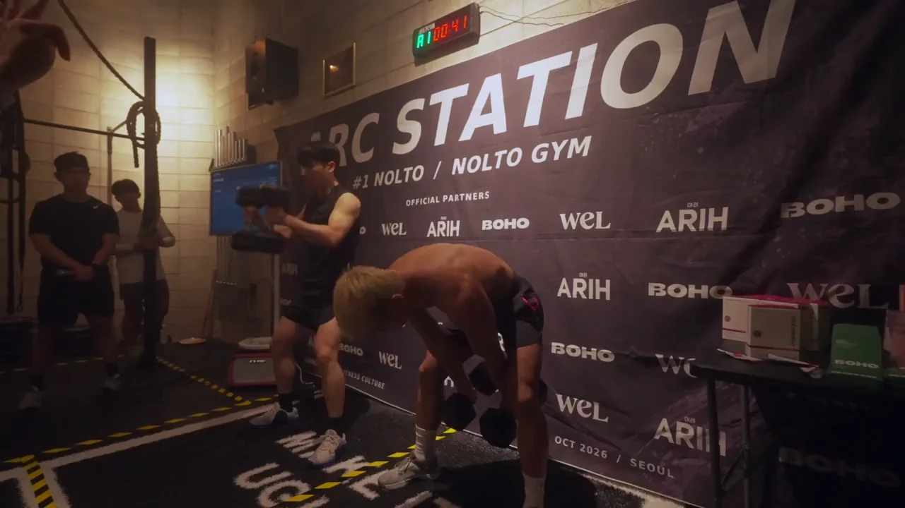

STATION 001 / COMPLETED
#1 NOLTO.
2026.10.31
NOLTO GYM · 서울 논현동
#1 NOLTO / FIELD NOTES현장 스케치 · 12초 · 음성 해설 없음
지하에서 함께한 첫 레이스.
두 명이 한 팀으로 덤벨·박스 운동과 로잉에 도전했습니다. 선수 바로 곁에는 관중이 있었고, 같은 공간 안에서 경기와 응원이 이어졌습니다.
우리의 첫 번째 스테이션을 함께 만든 모든 분께 감사합니다.
- 개최일
- 2026년 10월 31일
- 장소
- NOLTO GYM · 서울 논현동
- 경기
- 2인 팀 피트니스 레이스
- 제한 시간
- 8분
- 디비전
- BEGINNER / ATHLETE
- 상태
- 행사 종료
